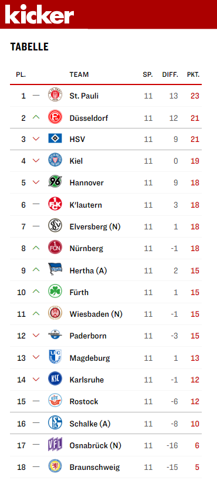

SVWW vs. Hansa Rostock @ 2023-10-29
Another step to class retention
 1:0
1:0

Football again. After my little excursion into the Europa Conference League, my team from SV Wehen Wiesbaden was called upon again on Sunday and with them the fans in the stadium. On the one hand because it was raining (and that is sometimes no fun in the front row) and on the other hand because the boys had won the last away game in Osnabrück and now had the opportunity to temporarily establish themselves in the midfield of the 2. Bundesliga. Another win was needed against an opponent from Rostock who, after a good start at the beginning of the season, had lost the last 6 games!
Since I have no chance to park my car anywhere at the stadium, I have already planned before the season to always go there with the scooter, which is a pure pleasure in the summer. With 10 degrees and light rain it was diemal but rather suboptimal conditions. But anyway…
I had expected that a lot of police, water cannon and other executive equipment would be on site, as it was already the case at the Schalke game, because the Hansa fans have a pretty bad reputation … But no. Not particularly many Rostockers have taken on the 700 kilometer journey and so the opposing stand was only half full and the police relaxed.
The nice old lady to my left (I really have to ask her about her name) was also there again, after missing the last home game due to a wedding, as she told me. The silent one on my right also and also this time he didn’t speak a word, so I’m starting to wonder if he can talk at all. The howler monkeys behind me were of course also there again and they had in the course of the game again plenty of opportunity to insult the referee, opposing players or our coach in the worst way.
This time there were only 8,600 spectators, which was probably also due to the weather. It was just cold and wet and I felt a bit sorry for the players, especially the goalkeepers. How do you keep warm when you’re standing on the field in shorts and not constantly running back and forth? A football mystery.
The Game
In the first 30 minutes the game was quite even. You could tell that both teams wanted a win, but the goal attempts, especially from Rostock, were nothing more than puny. Ours did a little better, but the ball still always went past the goal. Both teams were also a bit aggressive, for example, Perea from Rostock annoyed our keeper Stritzel so much that he extended his elbow and Perea sank to the ground like a striving man and rolled back and forth theatrically. An undignified spectacle, which the fans acknowledged with shrill whistles … and the referee with a penalty!
Stritzel has saved fantastic balls this season, but not a penalty yet … until then, as he parried Kinsombi’s weak shot to the side. Yesss…!
Nothing much happened until half-time, but our guys were slowly gaining the upper hand, as the game was played almost exclusively in the opponent’s half at the beginning of the second half, with occasional counter-attacks by Rostock, but they were too erratic to have any effect. Our defence stood firm.


The increasing control of the game also led to more chances to score, but either it went just over or Rostock keeper Markus Kolke (who played a total of 8 years in Wiesbaden until 2019) fished it out of the corners. The closer we got to the end of the game, the more nervous the fans (or just me and my seatmate) got. OMG, that thing has to go in, now!
The redemption came in the 89th minute: After a standard, Kolke parried Fechner’s shot forward and Prtajin only had to stick his head out … 1:0!
Conclusion
It was a nerve-wracking, but in the end a happy game. We fans would like to see more of these games, especially if it ends in a win. I haven’t seen our boys lose since I started going to the stadium thsi season. We can keep it up :D
You can interact with this article (applause, criticism, whatever) by mention it in one of your posts or by replying to its syndication on Mastodon, which will be shown here as a Webmention ... or you leave a good old comment with your GitHub account.
In case your blog software can't send Webmentions, you can use this form:
Webmentions
No Webmentions yet...


 There are many Mastodon instances out there.
Tell me yours and I will redirect you to the share dialog of your server:
There are many Mastodon instances out there.
Tell me yours and I will redirect you to the share dialog of your server:
Comments